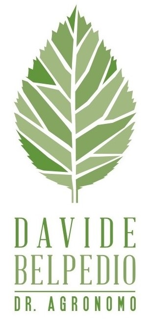

Natura, Progettazione
e Design
Studio tecnico di consulenze agrarie e progettazione del verde

L'ESSENZA
Spazi che respirano,
tra Scienza e Design
Come agronomo paesaggista, il mio obiettivo è creare un equilibrio perfetto tra le esigenze tecniche della natura e il desiderio estetico dell'uomo.
SCOPRI LA MIA STORIAProgetti in Evidenza
Una selezione delle ultime realizzazioni.